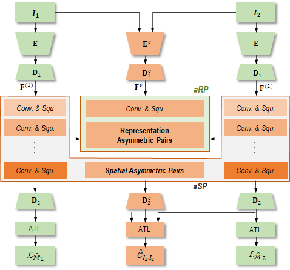
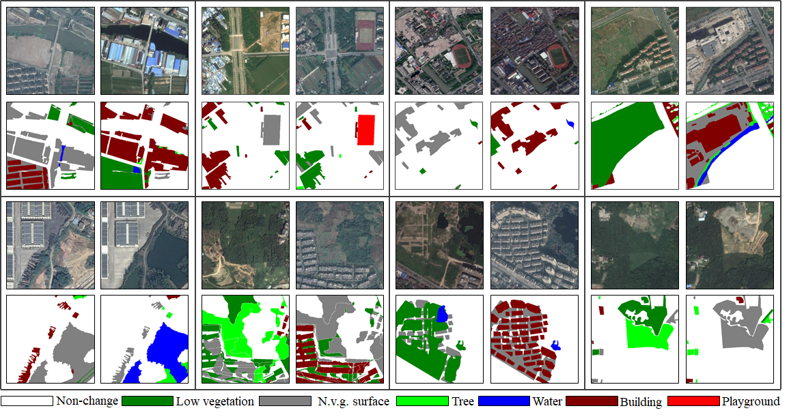
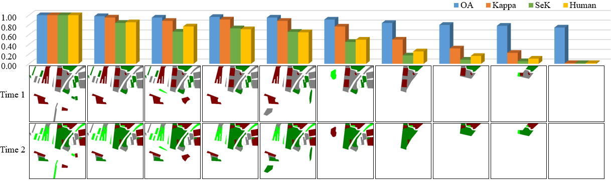

Semantic Change Detection with Asymmetric Siamese Networks
Kunping Yang, Gui-Song Xia, Zicheng Liu, Bo Du, Wen Yang, Marcello Pelillo, Liangpei Zhang.
Kunping Yang, Gui-Song Xia, Zicheng Liu, Bo Du, Wen Yang, Marcello Pelillo, Liangpei Zhang.
Given two multi-temporal aerial images, semantic change detection aims to locate the land-cover variations and identify their categories with pixel-wise boundaries. The problem has demonstrated promising potentials in many earth vision related tasks, such as precise urban planning and natural resource management. Existing state-of-the-art algorithms mainly identify the changed pixels through symmetric modules, which would suffer from categorical ambiguity caused by changes related to totally different land-cover distributions. In this paper, we present an asymmetric siamese network (ASN) to locate and identify semantic changes through feature pairs obtained from modules of widely different structures, which involve different spatial ranges and quantities of parameters to factor in the discrepancy across different land-cover distributions. To better train and evaluate our model, we create a large-scale well-annotated SEmantic Change detectiON Dataset (SECOND), while an adaptive threshold learning (ATL) module and a separated kappa (SeK) coefficient are proposed to alleviate the influences of label imbalance in model training and evaluation. The experimental results demonstrate that the proposed model can stably outperform the state-of-the-art algorithms with different encoder backbones.
In a summary, our main contributions in this work are threefold.
For addressing the asymmetric properties of SCD problem by exploiting siamese networks, we propose an Asymmetric Siamese Network (ASN) to extract changed pixels through two modules, i.e., asymmetric Spatial Pyramid (aSP) and asymmetric Representation Pyramid (aRP). Leveraging designed convolution sequences of different structures, aSP and aRP obtain features through several siamese feature pyramids calculated from input images.
Specifically, we design weighted dense connected topological architectures, where each node is linked to a feature pair across siamese feature pyramids. Although the whole architecture is symmetric, most of these feature pairs are obtained by widely different structures, namely locally asymmetric, where dynamic branch weights further adjust the module structure according to each input. Containing designated receptive fields and representation capabilities, these asymmetric feature pairs are able to focus on various spatial ranges and depict scenes of diverse complexities.
Fig.1 The illustration ASN, where several convolutional sequences and squeeze gates are utilized to obtain asymmetric feature pairs generated from widely different structures.
In order to set up a new benchmark for SCD problems with adequate quantities, sufficient categories and proper annotation methods, in this paper we present SECOND, a well-annotated semantic change detection dataset. To ensure data diversity, we firstly collect 4662 pairs of aerial images from several platforms and sensors. These pairs of images are distributed over the cities such as Hangzhou, Chengdu, and Shanghai. Each image has size 512 x 512 and is annotated at the pixel level. The annotation of SECOND is carried out by an expert group of earth vision applications, which guarantees high label accuracy. For the change category in the SECOND dataset, we focus on 6 main land-cover classes, i.e. , non-vegetated ground surface, tree, low vegetation, water, buildings and playgrounds , that are frequently involved in natural and man-made geographical changes. It is worth noticing that, in the new dataset, non-vegetated ground surface ( n.v.g. surface for short) mainly corresponds to impervious surface and bare land. In summary, these 6 selected land-cover categories result in 30 common change categories (including non-change ). Through the random selection of image pairs, the SECOND reflects real distributions of land-cover categories when changes occur.
Fig.2 Several samples of our proposed SECOND dataset. Color white indicates \emph{non-change} regions, while other colors indicate different land-cover categories. Ground truth for SCD can be obtained by comparing the annotated land-cover categories.
In order to alleviate the influence of label imbalance, we utilize Mean Intersection Over Union (mIOU) to evaluate BCD results and propose a Separated Kappa (SeK) coefficient to evaluate SCD results.
Specifically, given a confusion matrix , we define categorical IOU and mIOU as :
Categorical IOU measure the identification of non-change pixels and evaluates the extraction of changed regions. Compared with Overall Accuracy (OA), mIOU considers more about changed regions.
On the other hand, the true positive of non-change pixels `q_{11}` always dominates the calculation of Kappa. Thus, we separate `q_{11}` in the calculation of SeK. We also utilize categorical IOU to further emphasize changed pixels. Specifically, we define
where the exponential form enlarges the discernibility compared with simple multiplication for better models. We collect visual scores between 0 and 1 `w.r.t.`each result from 11 remote sensing image interpretation experts. As illustrated in the following figure, compared with Kappa and OA, models with apparently poor performances on small change categories would get low scores in SeK no matter how good the performances on BCD are. Moreover, the Mean Square Error (MSE) between SeK and human scores is 0.003. While, MSE `w.r.t.`OA and Kappa are 0.212 and 0.028 respectively, which further validates the rationality of SeK.
Fig.3 Given a change detection data sample, i.e. a pair of images and a sequence of change detection results, we collect visual scores between 0 and 1 w.r.t. each result from 11 remote sensing image interpretation experts. Meanwhile, we calculate evaluation scores of each result based on OA and Kappa. Compared with OA and Kappa, SeK is more in line with human scoring in SCD problem.
@Misc{Yang2020SECOND,,
title={Semantic Change Detection with Asymmetric Siamese Networks},
author={Kunping Yang and Gui-Song Xia and Zicheng Liu and Bo Du and Wen Yang and Marcello Pelillo and Liangpei Zhang},
year={2020},
eprint={arXiv:2010.05687},
}
If you have any problem on the use of SECOND dataset or Asymmetric Siamese Network model, please contact: